PM Hub Cost 사용자 매뉴얼
착수 전 프로젝트의 인건비 · 경비 · 분할계약 · 견적을 넣으면 원가와 이익률을 바로 계산하고, 회사 양식의 사업검토서와 종합보고서를 엑셀로 만들어 주는 프로그램입니다. 설치나 서버 없이 브라우저에서 열고, 자료는 고른 폴더의 엑셀 파일에 저장합니다. 그림은 샘플 프로젝트 화면입니다 (그림을 누르면 크게 보입니다).
1시작하기
- 배포 zip 의 압축을 풀고
index.html을 Chrome 또는 Edge 로 엽니다 (더블클릭). 인터넷 연결은 필요 없습니다. - 머리줄의 폴더 연결 1 또는 안내 줄 2 의 버튼을 눌러 자료 폴더를 고릅니다. 처음이면 압축을 푼 폴더(또는 그 안의
data)를 고르면 됩니다. - 브라우저가 "파일 편집 허용"을 물으면 허용을 누릅니다. 이후 프로젝트 목록이 머리줄에 나타납니다.
- 다음부터는 브라우저가 폴더를 기억합니다. 프로그램을 다시 열면 폴더 다시 연결 을 한 번 누르세요 (브라우저 보안 규칙이라 이 한 번은 꼭 필요합니다).
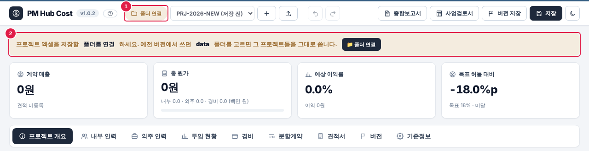
data 폴더를 고르세요. 프로젝트를 그대로 읽습니다.2화면 구성
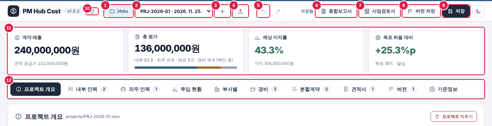
- 1자료 폴더 — 눌러서 다른 폴더로 바꿈
- 2프로젝트 목록 — 고르면 그 프로젝트를 엶
- 3새 프로젝트 — 마스터 목록으로 시작하는 빈 프로젝트
- 4엑셀 열기 — 이 프로그램이 저장한 엑셀이나 업로드 양식을 엶
- 5되돌리기 · 다시 하기 (Ctrl+Z · Ctrl+Y)
- 6종합보고서 — 원가 분석 보고서 엑셀 (13장)
- 7사업검토서 — 회사 양식에 값을 채운 엑셀 (12장)
- 8버전 저장 — 이름 · 메모를 붙여 지금 자료를 남김 (10장)
- 9저장 (Ctrl+S) — 눌러야 파일에 기록됨
- 10화면 밝게 / 어둡게, 옆의 ? 는 이 매뉴얼
- 11요약 — 계약 매출 · 총 원가(구성 막대) · 예상 이익률 · 목표 허들 대비
- 12탭 — 숫자는 줄 수. [부서별] 탭은 부서가 2개 이상일 때만
3프로젝트 만들기 · 개요
- 머리줄 ＋ (새 프로젝트)를 누르면 마스터 목록으로 시작하는 빈 프로젝트가 열립니다.
- [프로젝트 개요] 탭에서 프로젝트 ID 를 넣습니다. 저장하면 파일 이름이
projects/<프로젝트ID>.xlsx가 됩니다. - 프로젝트명 · 고객사 · PM · 영업대표 · 기간(시작 · 종료) · 계약 매출 · 목표 허들 이익률 · 프로젝트 Type · 설명을 넣습니다.
- 기간 입력 단위는 월(YYYY-MM) 또는 일(YYYY-MM-DD)을 고를 수 있습니다. 인력 · 경비의 달 칸은 이 기간으로 만들어집니다.
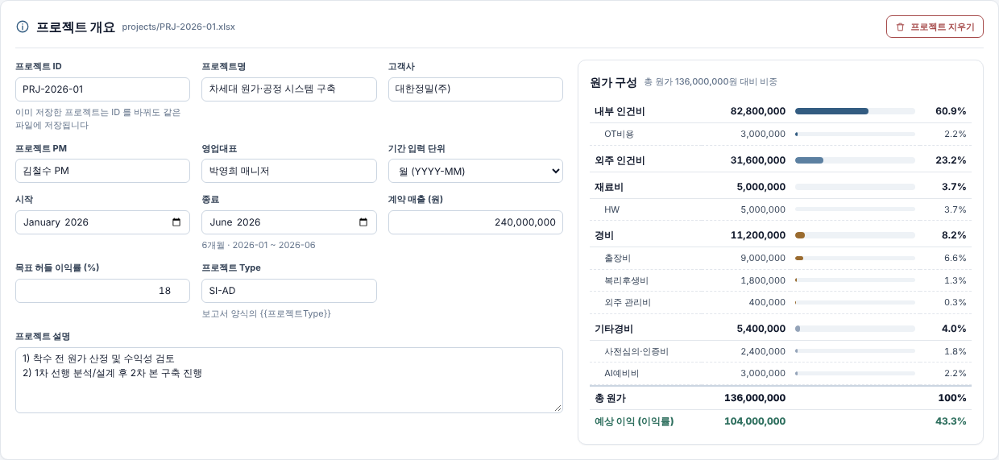
4내부 · 외주 인력
사람마다 한 줄씩 넣고, 달마다 투입 MM 을 넣습니다. 내부 인력은 직급의 월 단가, 외주 인력은 업체 × 기술등급의 단가로 원가를 계산합니다. 열 순서는 사업검토서의 원가상세와 같습니다 (영역 · 시스템 · 역할 · 부서 · 성명 · 직급 · 기술등급 · 제안 직무 · 제안 등급 · 총 MM · 매입단가 · 근무지 · 인비례).
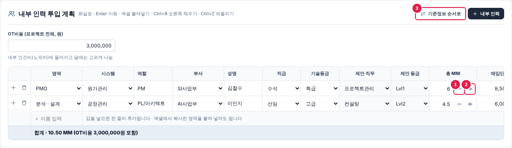
- 1고르게 — 총 MM 을 전체 기간에 고르게 나눔
- 2기간 배분 — 고른 기간에만 나눔 (아래 그림)
- 3기준정보 순서로 — 줄을 기준정보(영역 · 직급 …) 순서로 다시 세움
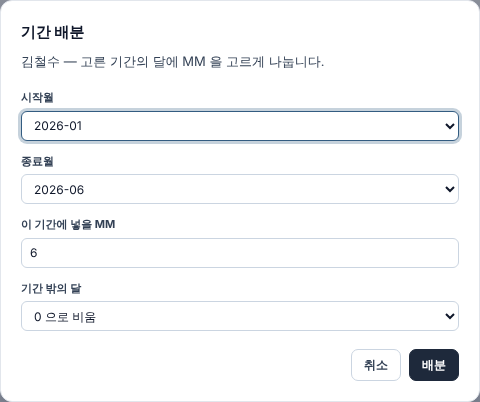
총 MM 과 달별 MM
- 총 MM 은 직접 넣을 수 있고, 달별 MM 을 고치면 그 합으로 바뀝니다.
- MM 은 소수 둘째 자리까지 (예: 0.25).
- 단가가 바뀌는 달(연봉 인상 · 협상 단가)은 MM 칸 왼쪽에 주황 선이 보입니다.
OT비용
[내부 인력] 탭 위의 OT비용은 프로젝트 전체 금액 하나입니다. 내부 인건비(노무비)에 포함되고 달에는 고르게 나뉩니다.
인비례
내부 인력의 인비례를 체크하면 그 사람의 MM 만큼 인비례 경비(예: 복리후생비)가 자동으로 붙습니다 (6장).
외주 인력
협력사 · 기술등급을 고르면 [기준정보 > 외주업체 단가]의 단가가 들어갑니다. 그 사람만 다른 단가면 매입단가 칸에 직접 넣습니다.
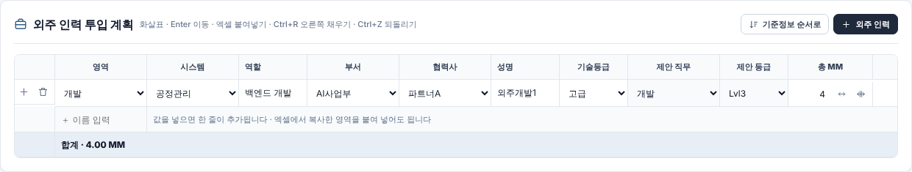
5표를 엑셀처럼 쓰기
인력 · 경비 · 기준정보 표는 엑셀처럼 키보드로 다룹니다.
| 하고 싶은 것 | 방법 |
|---|---|
| 칸 이동 | 화살표, Enter(아래) · Shift+Enter(위), Tab. 칸에 들어가면 값이 선택되어 바로 덮어씀 |
| 엑셀에서 붙여넣기 | 엑셀에서 영역을 복사 → 칸을 고르고 Ctrl+V. 줄이 모자라면 인력을 추가. 머리글째 복사하면 머리글 이름으로 열을 맞춤 |
| 새 줄 | 표 맨 아래 빈 줄(+ 이름 입력)에 이름을 넣음 |
| 특정 줄 아래에 넣기 · 지우기 | 줄 왼쪽의 ＋ · 휴지통 |
| 오른쪽 채우기 | MM(경비는 월 금액) 칸에서 Ctrl+R — 그 달부터 끝 달까지 같은 값 |
| 되돌리기 | Ctrl+Z · 다시 하기 Ctrl+Y (모든 탭) |
6경비 · 재료비
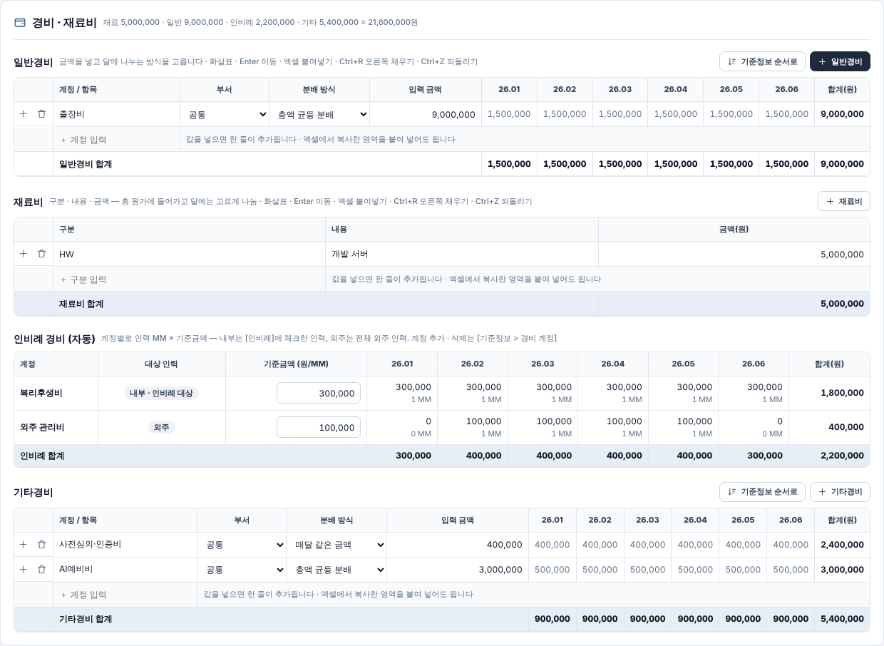
| 구분 | 넣는 법 · 계산 |
|---|---|
| 일반경비 · 기타경비 | 계정 / 항목과 금액을 넣고 분배 방식을 고름 — 총액 균등(기간에 나눔) · 매달 같은 금액 · 월별 직접 입력. 달별 금액을 직접 고치면 월별 직접 입력으로 바뀜 |
| 재료비 | 구분 · 내용 · 금액. 총 원가에 들어가고 달에는 고르게 나눔 |
| 인비례 경비 (내부) | [인비례]에 체크한 내부 인력의 MM × 계정의 기준금액(원/MM) — 자동 |
| 인비례 경비 (외주) | 외주 인력 MM × 기준금액 — 자동 |
인비례 계정과 기준금액은 [기준정보 > 경비 계정]에서 정하고, 이 탭에서도 기준금액을 바로 고칠 수 있습니다. 기타경비 중 이름이 AI예비비 인 항목은 사업검토서에서 따로 표시됩니다.
7투입 현황 · 부서별
투입 현황
인력 계획을 부서 · 영역 · 시스템 · 제안 직무 · 직급 · 역할 · 업체 · 내부/외주 별로 모아 인원, 달별 MM, MM · 금액 비중, 인건비를 봅니다. [기간]에서 분할계약 회차를 고르면 그 기간만 봅니다.
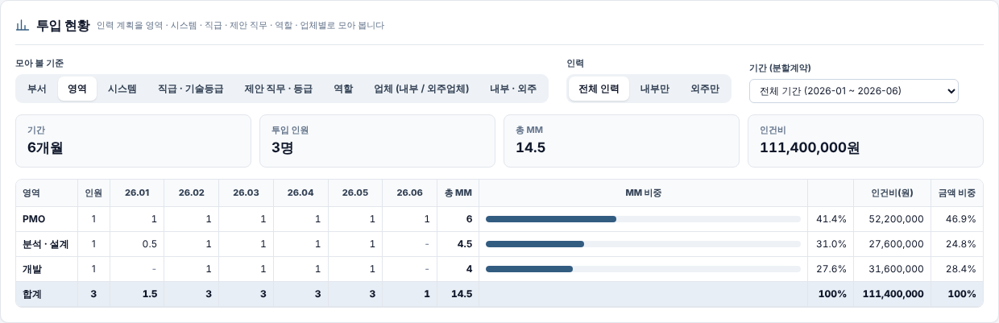
부서별 (부서가 2개 이상일 때)
- [기준정보 > 마스터 > 부서]에 부서를 2개 이상 넣으면 인력 · 경비에 부서 칸과 [부서별] 탭이 나타납니다. 하나 이하면 화면은 그대로입니다.
- 인건비 · 인비례 경비는 사람의 부서로, 일반 · 기타경비는 항목의 부서로 들어갑니다. 경비의 부서를 비우면 공통이고, 고른 기준(직접 원가 비율 · MM 비율 · 매출 비율 · 똑같이)으로 나눕니다.
- 매출은 부서마다 직접 넣습니다. 부서 합계는 항상 통합 원가와 같고, 부서 매출 합이 계약 매출과 다르면 알려 줍니다.
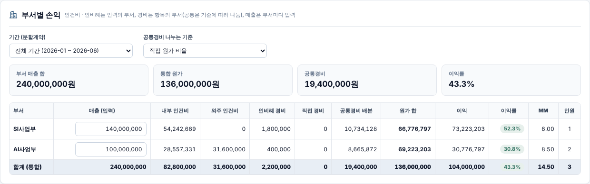
8분할계약
계약을 여러 차수로 나눌 때 차수마다 이름 · 기간 · 매출을 넣으면, 그 기간의 원가(합계 · 내부 · 외주 · 경비)와 이익률 · 누적 · 잔여를 계산합니다. 별도 원가를 넣으면 기간 원가 대신 그 금액을 씁니다. 부서가 2개 이상이면 아래에 차수 × 부서 손익이 보이고, 차수마다 부서 매출을 한 번 넣습니다.
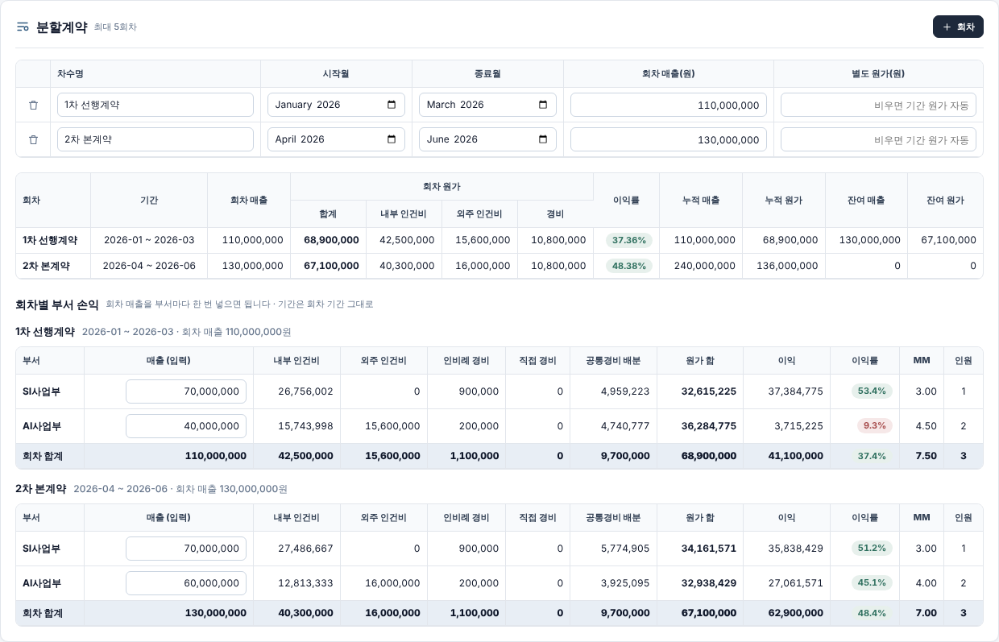
9견적서
- 인건비는 고객 제안 직무 × 제안 등급의 제안 단가 × 견적 MM 으로 계산합니다 (단가는 [기준정보 > 제안 단가]).
- 인력 계획에서 가져오기 를 누르면 인력에 넣어 둔 제안 직무 · 등급별로 MM 을 모아 줄을 만듭니다. 견적 MM 은 실제 투입과 다르게 고쳐도 됩니다.
- SW · HW · 용역 같은 기타 항목을 넣습니다.
- 아래 견적 금액에서 할인율(%)과 절사 단위를 고릅니다 — 합계 → 할인 → 절사(단위 아래 버림, 예: 100원 단위면 9,999 → 9,900) → 견적 금액. 부가세는 넣지 않습니다.
- 공급가액 → 계약 매출 은 견적 금액을 프로젝트의 계약 매출로 옮깁니다.
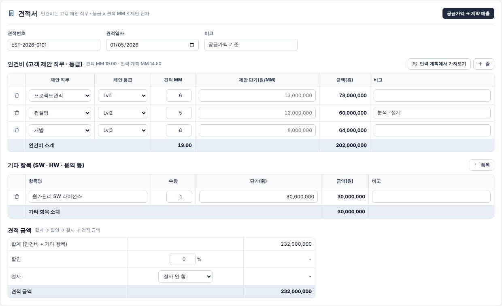
10버전 (기준선)
초기 계획 · 실계약 · 수정계약처럼 중요한 시점의 자료를 이름과 메모를 붙여 통째로 남깁니다. 버전은 프로젝트 파일 안에 함께 저장됩니다.
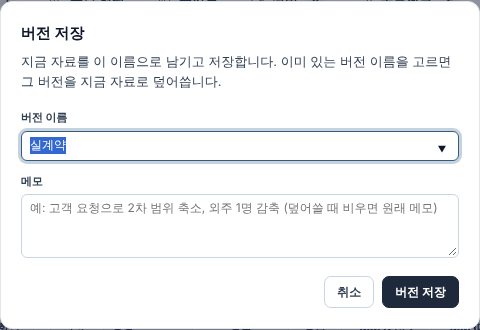
- 버전 저장: 지금 자료를 버전으로 남기고 파일도 저장합니다.
- 덮어쓰기: 고른 버전을 지금 자료로 바꿉니다.
- 불러오기: 그 버전의 자료를 지금 화면으로 가져옵니다 (저장해야 파일에 반영, Ctrl+Z 로 되돌림).
- 버전 비교: 기준과 비교 대상(다른 버전 또는 지금 화면)의 매출 · 인건비 · 경비 · 총 원가 · 이익률 · MM 과 사람별 차이를 봅니다.
- 가장 최근 버전은 사업검토서의 "수주협 4차" 줄에 들어갑니다.
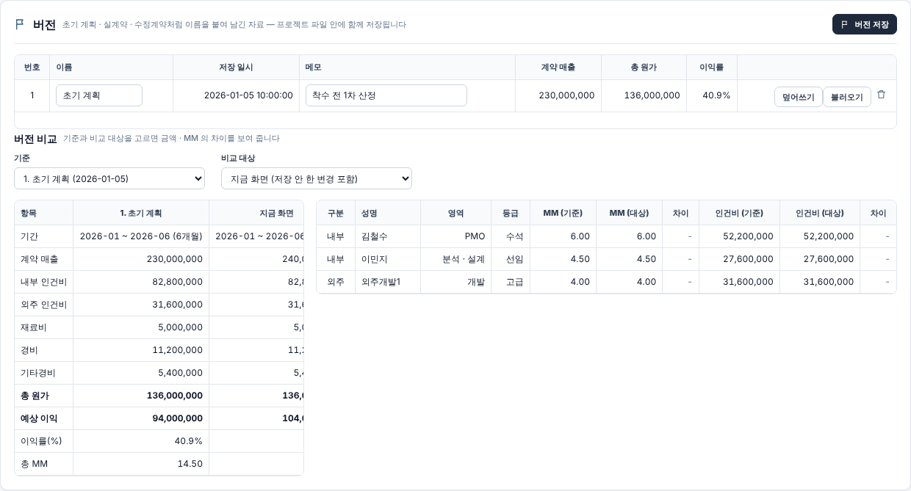
11기준정보 · 마스터
[기준정보] 탭은 두 묶음입니다.
| 묶음 | 내용 | 어디에 저장 |
|---|---|---|
| 프로젝트 설정 이 프로젝트에만 | 인건비 단가(직급별 · 연봉 인상) · 외주업체 단가 · 제안 단가(직무 × 등급) · 시스템 · 보고서 양식 · 샘플 | 프로젝트 파일 |
| 마스터 (전사 공통) 목록만, 금액 없음 | 직급 · 기술등급 · 제안 직무 · 등급 · 영역 · 근무지 · 경비 계정 · 부서 · 결재자 | master/master_rates.xlsx 로 전사 배포 |
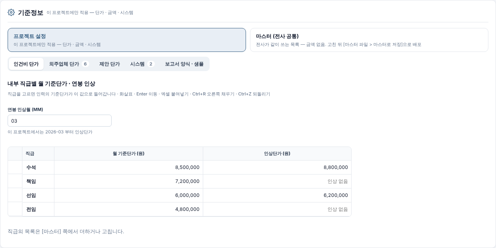
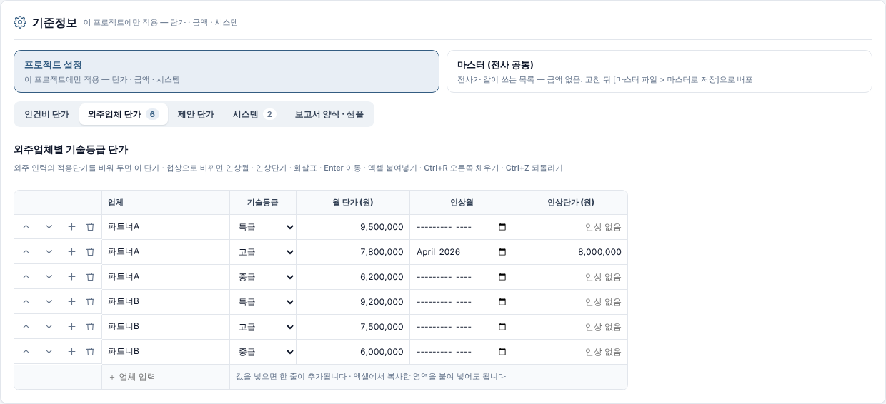
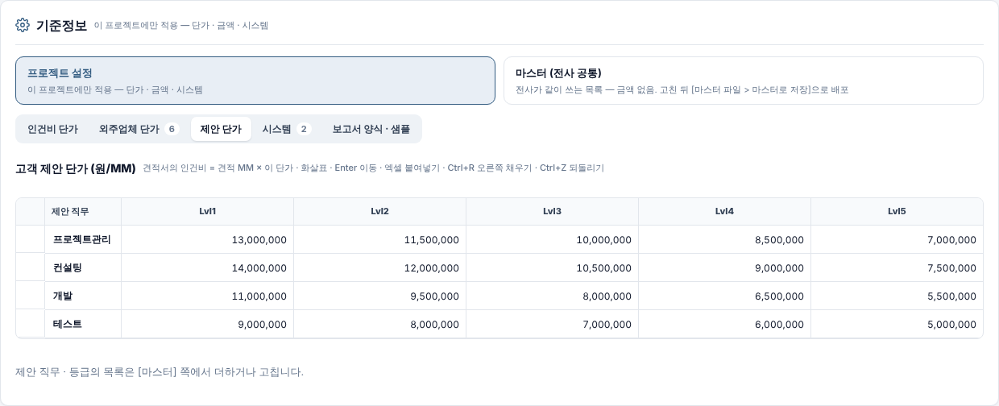
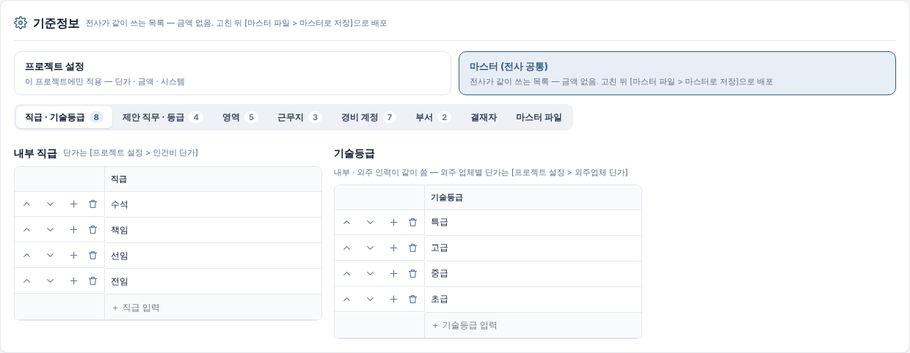
목록 다루기
- 줄 왼쪽 ＋ 는 그 줄 아래에 새 줄, ▲ ▼ 는 순서 바꾸기. 투입 현황 · 원가 구성 · 보고서는 이 순서로 보입니다.
- 마스터에서 이름을 바꾸면 인력 · 단가 · 경비 줄도 새 이름으로 바뀝니다.
- 부서는 2개 이상일 때만 부서 칸 · [부서별] 탭이 보입니다.
마스터 파일 (전사 배포)
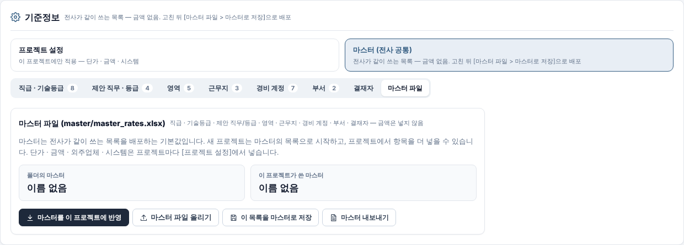
| 버튼 | 하는 일 |
|---|---|
| 마스터를 이 프로젝트에 반영 | 폴더의 마스터에만 있는 항목을 이 프로젝트에 더함 (이미 있는 금액은 그대로) |
| 마스터 파일 올리기 | 본사에서 받은 마스터 파일을 고름 — 바뀌는 것을 먼저 보여 주고 폴더의 마스터로 저장 |
| 이 목록을 마스터로 저장 | 지금 목록을 폴더의 마스터로 (이름 · 날짜, 이전 마스터는 backups 에) |
| 마스터 내보내기 | 마스터 파일을 내려받아 다른 사람에게 배포 |
12사업검토서 (회사 양식 출력)
- 머리줄 사업검토서 를 누르고 양식을 고른 뒤 출력. 기본 양식은 Offline사업검토서 (사업개요 · 원가상세 · 인력투입계획 점검(5Tier)).
- 파일
양식이름_프로젝트ID_프로젝트명_최종작성일.xlsx를 내려받고, 폴더가 연결돼 있으면reports/에도 남깁니다. - 알림에 "합계 수식 검증 40개 항목 일치" 가 나오면 양식의 합계 수식이 프로그램 계산과 같다는 뜻입니다.
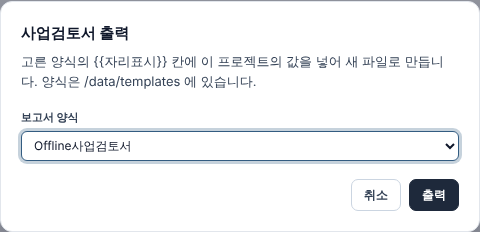
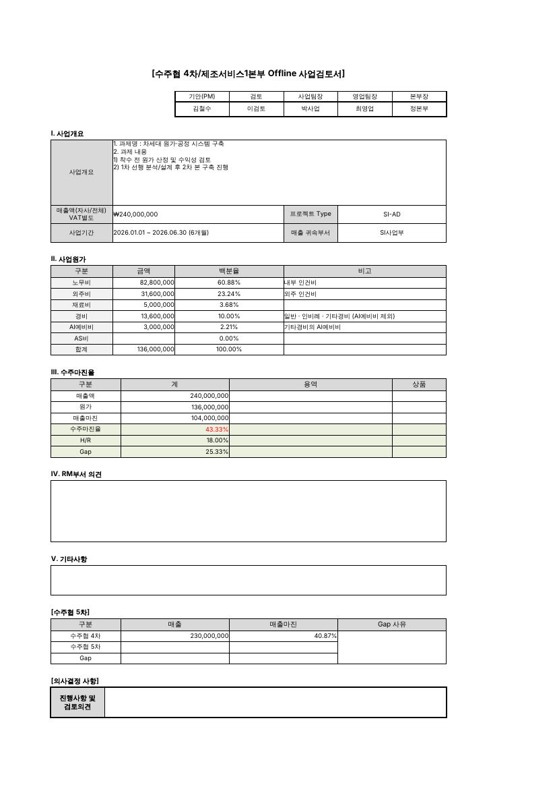
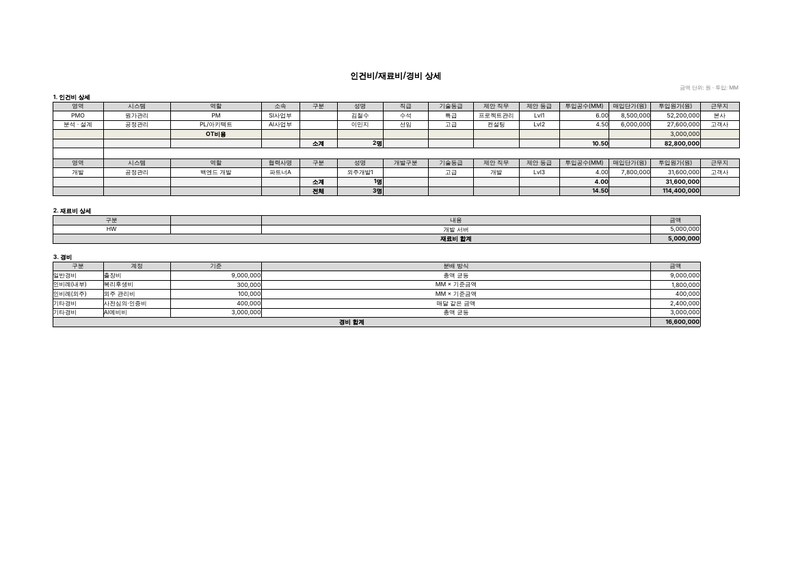
출력한 엑셀을 고칠 때
- 원가상세 소계 · 사업원가 · 백분율 · 매출마진 · 수주마진율 · Gap · 5Tier 합계는 엑셀 수식입니다. 사람 금액 · MM · 경비를 고치면 합계가 따라 바뀝니다.
- 사람별 투입원가는 값입니다 (달마다 인상 단가가 달라 MM × 단가와 다를 수 있음).
- 기간 밖의 달 열은 숨겨집니다. 달은 12개월까지 나오고, 넘으면 안내 문구가 붙습니다.
- 5Tier 의 자사(내부) · BP(외주) ○ 는 자동, AGS · ATS · AI Tool 은 손으로 표시합니다.
양식 고쳐 쓰기
- 자료 폴더
templates/의 양식을 Excel 로 고칩니다. 값이 들어갈 칸에{{매출액}}처럼 자리표시를 적습니다. 자리표시 목록은 [기준정보 > 프로젝트 설정 > 보고서 양식 · 샘플]. {{내부인력.성명}}처럼 목록.값 이 있는 줄은 사람 수만큼 복사됩니다. 합계 칸의 수식 범위도 함께 늘어납니다.- 숨긴 시트 검증은 출력할 때 양식 수식 값과 프로그램 값을 비교합니다. 다르면 항목별 차이를 창으로 알려 줍니다 (파일은 만들어짐). 합계 칸 위치를 바꿨다면 검증 시트(Excel 에서 숨기기 취소)의 B열 참조도 맞춰 주세요.
- 모르는 자리표시(오타)는 빈칸으로 두고 알림으로 알려 줍니다.
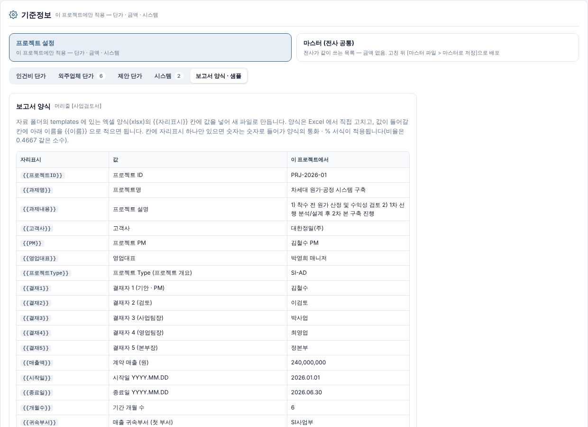
templates/Offline사업검토서.xlsx 를 지우고 폴더를 다시 연결하세요 (회사에서 고친 양식이면 먼저 따로 보관).13종합보고서
머리줄 종합보고서 는 원가 분석 보고서 엑셀을 만듭니다: 01_통합보고(개요 · 수익성 · 원가 구성 · 분할계약 · 인력 투입 · 견적) · 02_항목별상세(인력 · 경비의 달별 MM · 금액) · 03_투입현황 · 04_부서별손익(부서 2개 이상). 폴더가 연결돼 있으면 reports/ 에도 남깁니다.
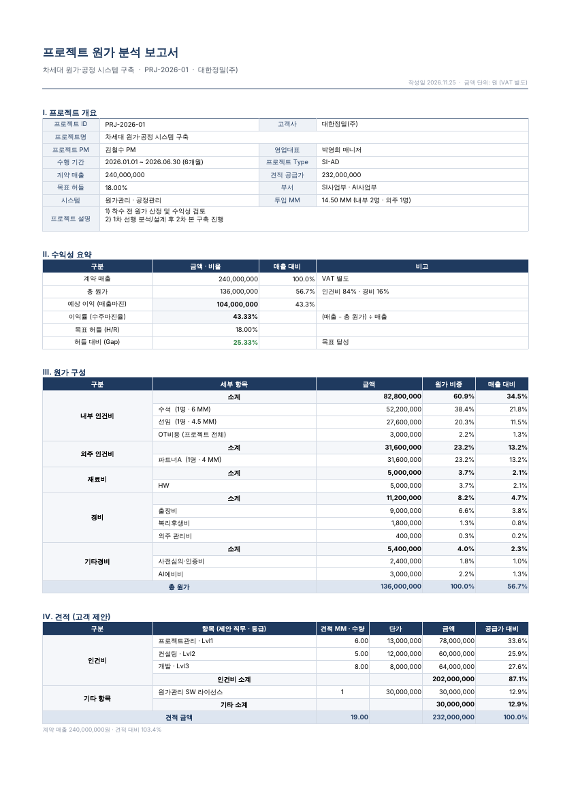
14저장 · 백업 · 자료 폴더
- 자동 저장은 없습니다. 저장 또는 Ctrl+S 를 눌러야 파일에 기록됩니다.
- 저장하지 않은 변경이 있으면 머리줄에 ● 저장 안 됨 1 이 보이고, 다른 프로젝트로 가거나 창을 닫을 때 먼저 묻습니다.
- 저장할 때마다 바로 전 파일을
backups/에 남깁니다 (프로젝트마다 최근 20개). - 프로젝트 파일을 Excel 로 열어 둔 채 저장하거나, 다른 곳에서 먼저 바뀐 파일이면 덮어쓰기 전에 알려 줍니다.
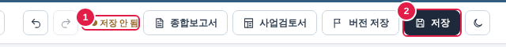
| 자료 폴더 안 | 내용 |
|---|---|
master/master_rates.xlsx | 마스터 (전사 공통 목록) |
projects/<프로젝트ID>.xlsx | 프로젝트 하나에 파일 하나 (Excel 로 열면 정보 · 인력 · 경비 · 분할계약 · 견적 · 버전 시트) |
backups/ | 저장 직전 파일. backups/deleted/ 는 지운 프로젝트 — projects 로 옮기면 되살아남 |
reports/ | 종합보고서 · 사업검토서로 만든 엑셀 |
templates/ | 사업검토서 양식 · 업로드 양식(project_upload_template.xlsx) |
State_JSON 은 다시 불러올 때 쓰는 원본 자료입니다. 고치지 마세요. 사내 문서보안(DRM)이 엑셀 파일을 암호화하면 프로그램이 읽지 못하므로, 자료 폴더는 DRM 예외로 두어야 합니다.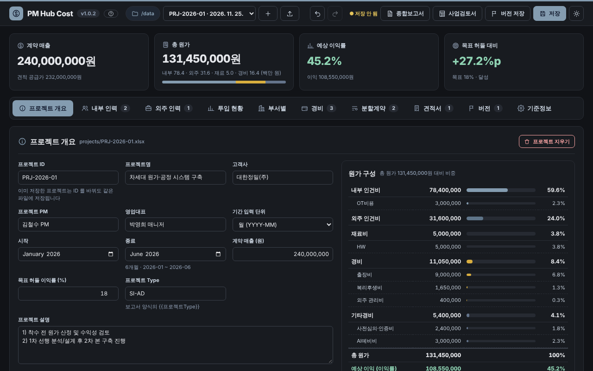
15단축키
| 키 | 하는 일 |
|---|---|
| Ctrl+S | 저장 |
| Ctrl+Z / Ctrl+Y | 되돌리기 / 다시 하기 |
| 화살표 · Enter · Shift+Enter · Tab | 표 칸 이동 |
| Ctrl+V | 엑셀에서 복사한 영역 붙여넣기 |
| Ctrl+R | 오른쪽 끝 달까지 같은 값 채우기 |
| Esc | 열린 창 닫기 (취소) |
16자주 묻는 질문
프로그램을 다시 열었더니 프로젝트 목록이 비어 있어요
브라우저 보안 규칙 때문입니다. 머리줄의 폴더 다시 연결 을 한 번 누르고 허용하세요.
저장했는데 다른 사람 PC 에서는 안 보여요
자료는 고른 폴더에만 저장됩니다. 같은 공유 폴더를 연결해야 같은 프로젝트를 봅니다. 두 사람이 같은 프로젝트를 동시에 고치면 나중에 저장하는 사람에게 "다른 곳에서 먼저 바뀜" 알림이 나옵니다.
사업검토서 출력 뒤 "검증" 창이 떠요
양식의 합계 수식이 프로그램 값과 다르다는 뜻입니다. 양식을 고치면서 합계 범위나 참조가 어긋났을 때 나옵니다. 창에 나온 항목의 수식을 확인하거나, 기본 양식으로 바꿔 보세요 (12장).
잘못 지운 프로젝트를 되살리고 싶어요
자료 폴더의 backups/deleted/ 에 있는 파일을 projects/ 로 옮기면 목록에 다시 나타납니다. 저장 전의 이전 파일은 backups/ 에 있습니다.
인터넷이 안 되는 PC 에서도 되나요?
됩니다. 이 프로그램은 외부와 통신하지 않고, 필요한 파일이 모두 배포 폴더 안에 있습니다.